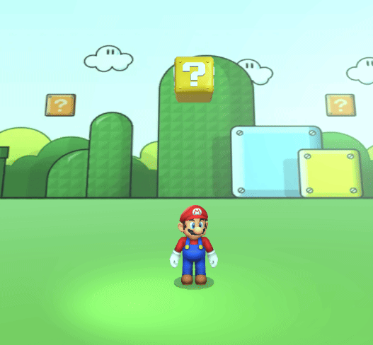
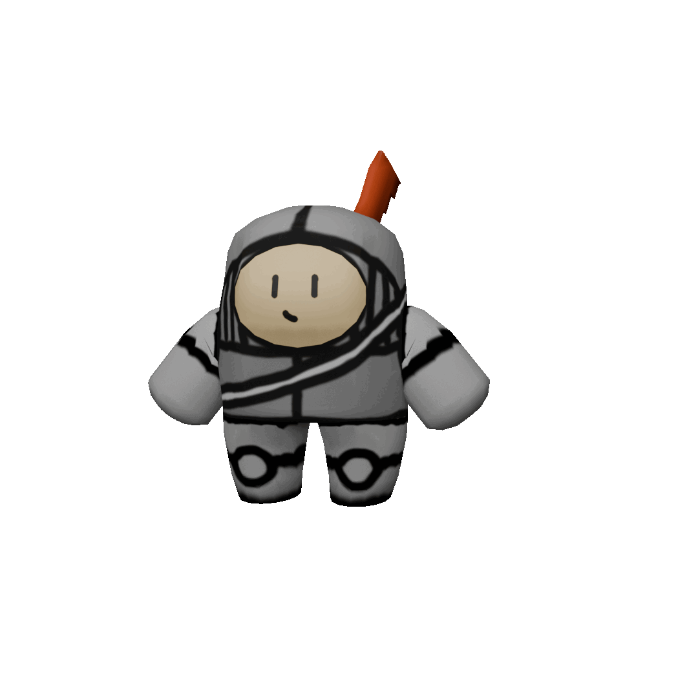
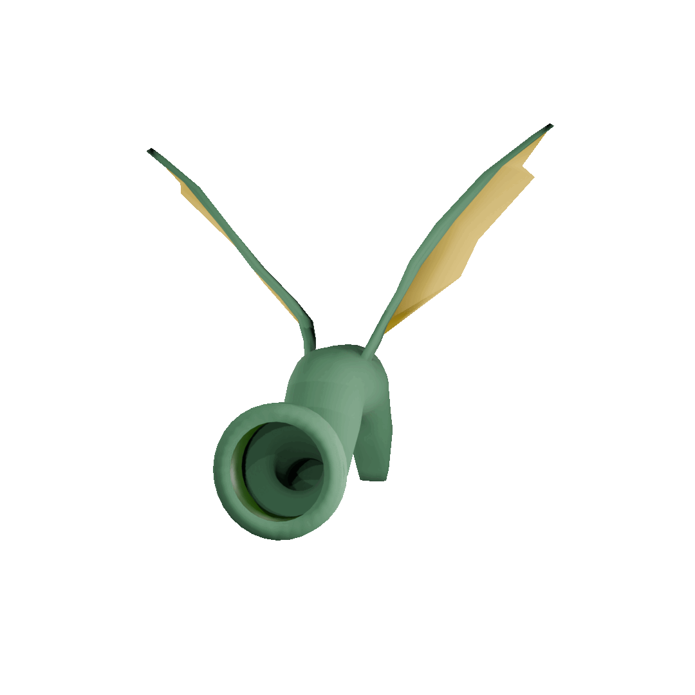
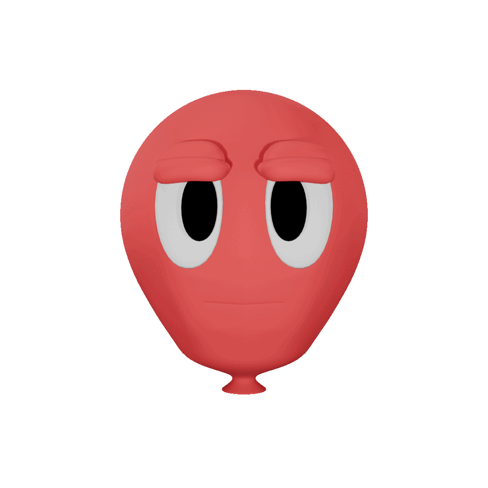
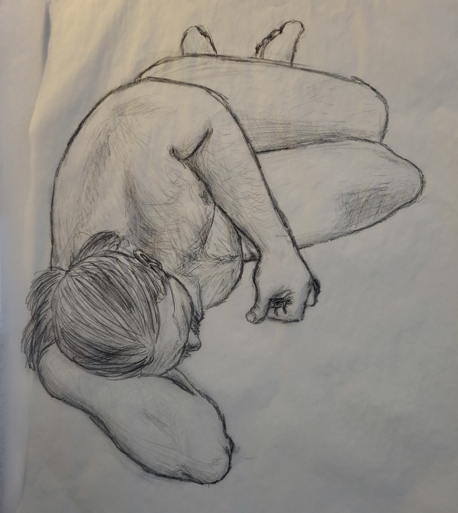
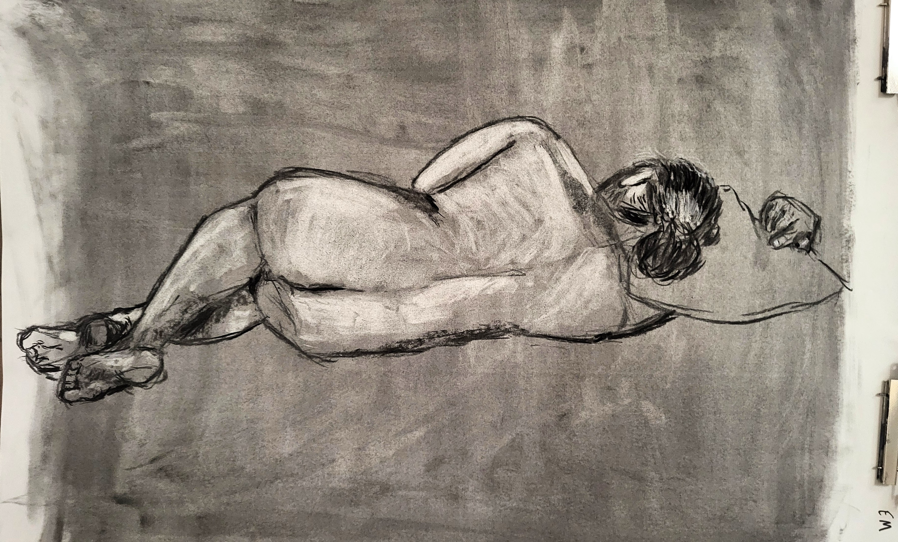
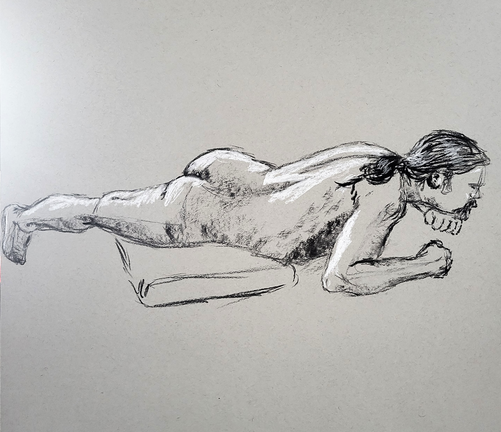

3D Models
-
Prince Randumb
This character that I designed and named when I was 8 was my choice for a challenge where I had to model, rig, texture, and animate a character in one hour. I only went a little over the time, but it was worth it! You can play as him in the web game on eecs298.com!
-
Garbot
The player character model for my game Pick It Up!. One of the first models I ever made in Blender, I jumped right into the deep end for this project, and I'm super happy with the result.
-
Balloony
One of my first models, I made Balloony with the goal of making a fully driver-controlled rigged face in Blender, and learning to animate. The exercise taught me a lot, even if the final model is a bit gloomy.
Animations
-

Mario Jumping
I developed these sequential animations for Mario jumping for an assignment in EECS 298 that was designed to teach students about the Unity animator with a focus on blend trees and transitions.
-
Pick It Up! Story
Animated in Adobe Animate CC for my game, Pick It Up!. I taught myself the software for this project, and figured out a workflow that worked for me as I went along. The project took 81 hours, and won the 2025 Lightworks Festival Award for Best Animation.
-

Prince Randumb Gameplay Animations
These animations were created alongside the model in a little over an hour for a personal challenge, and were implemented into the EECS 298 webgame.
-

Dragon Locomotion
This was an enemy I modeled and animated for a Prince Randumb minigame concept that didn't end up getting made. I loved this flap animation though.
-

Earliest Blender Animation
The first real animation I made in Blender, I wanted to show the full range of the facial rig I'd created for Balloony by having him blink, look around, and say "Hello, my name is Balloony." It's a little cursed, but I'm proud of it for the early start that it was.
Other Mediums
-

Life Drawing
This drawing was completed in two 15 minute sessions, first in charcoal, and then again in pencil on a piece of tracing paper on top of the charcoal. I really enjoyed getting the crazy foreshortening in this pose accurate in such a short time frame.
-

Life Drawing
This drawing was completed in 20 minutes in charcoal from a live model. I had fun experimenting with taking charcoal away to try to capture the way the lighting setup was illuminating the model's back.
-

Life Drawing
This drawing was completed in 20 minutes in charcoal and chalk on toned paper as part of a light-blocking exercise.